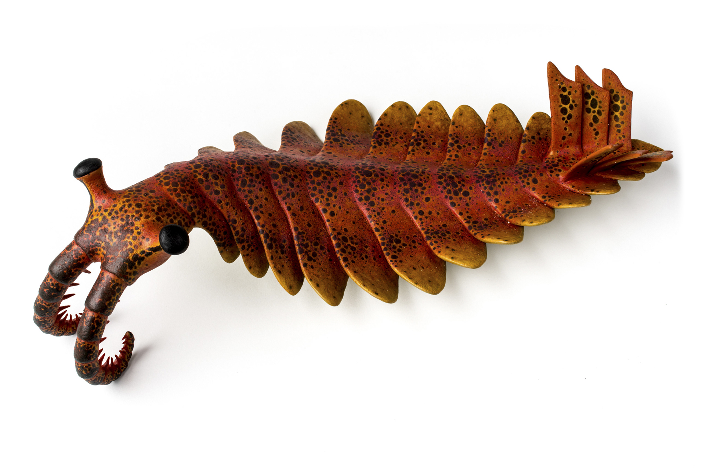

第 10 章
绿色登陆之后
海洋里已经出现了一种全新的时间节奏。捕食者追猎，猎物逃逸，海底沉积物被不断翻动，复杂的食物网从寒武纪早期开始一层层建立起来。

寒武纪奇虾（Anomalocaris）化石复原
图源：维基共享资源 · Unknown · CC BY-SA 3.0
而在紧邻的陆地上，同样漫长的时间里几乎没有发生任何可与之相比的变化。高的地方是裸露的岩石，低的地方是松散的碎石和沙粒。雨水流过表面，带走的只有矿物颗粒，没有根系来固定土壤，也没有连续的腐殖层拦住水分。
这是一个尖锐的并置。一侧是高度动态、大量消耗溶解氧的海洋生态系统；另一侧是一片化学上近乎惰性的陆地表面。
寒武纪建立起来的高能耗世界始终依赖海洋中的氧气供应，而广袤的大陆却迟迟没有加入氧气生产的行列。
这种不对称的局面在志留纪到泥盆纪期间开始松动。推动力并不是哪一次剧烈的天体撞击，也不是某场瞬间的环境灾变，而是一批紧贴潮湿地面生长的绿色生命，缓慢而不可逆地改变了大气组成。
最早登陆的植物来自淡水绿藻的一个分支——轮藻。它们在间歇性干涸的水塘和河岸边缘活了下来，逐渐演化出耐受空气干燥的能力。这些早期有胚植物与真菌一起，在志留纪晚期和泥盆纪不断向河岸带的陆地扩张，形成了广袤的湿地植被，史称“志留纪—泥盆纪陆地革命”。
志留纪晚期的化石记录中已经出现了这些先驱者的痕迹。它们的形态极为简单，通常只有几厘米高，没有真正的叶子，也没有现代意义上的根。茎轴紧贴岩石表面，依靠薄薄的细胞层吸收水分，生存范围被严格限制在河湖岸边、潮湿洼地等水分稳定的微环境中。
这些早期有胚植物对全球碳循环的扰动微乎其微。它们的光合作用只发生在离地表极近的地方，产生的有机质很少，死后大多在原地被微生物分解，重新变成二氧化碳和水。如果陆地植物停留在这个阶段，氧气革命的故事可能仍然主要属于海洋。
真正的转折来自植物身体内部的构造变化。泥盆纪早期的莱尼蕨属化石保存了关键的解剖学证据。茎部的横切面切片显示，管胞细胞壁出现了加厚的螺旋状和环状纹理。这些加厚壁并不只是植物为了支撑身体而制造的硬质部件。它们首尾相连，形成了一条条细小的导水管路。水分可以从接触湿土的基部向上运输，输送到离开地面的枝条和孢子囊。植物由此第一次摆脱了完全匍匐生长的限制，开始向空中伸展。
库克逊蕨属的化石中也能看到类似的早期维管束结构。它们的分枝简单，有的像一根根细小的叉子，顶端的孢子囊是整株植物最显眼的部分。但就在这些不起眼的构造中，纵向运输和机械支撑的双重功能已经合为一体。
维管组织的出现带来了一个连带后果：植物可以长高，生物量不再只集中在地表一层。更高的植物能拦截更多阳光，也占据了更大的生存空间。地下的结构并没有停滞。
早期维管植物的根系开始复杂化，许多种类与真菌形成密切共生关系。菌丝比植物自身的根毛更细，可以钻进岩石微小的裂缝和矿物晶体之间。真菌分泌有机酸，植物根系释放呼吸作用产生的二氧化碳，两者共同在根围形成化学侵蚀的微小前沿。岩石被逐渐软化、剥离，原本锁在矿物晶格中的磷、钙、镁等元素进入土壤溶液。
这个机制的意义远远超过一棵植物的生长本身。磷是海洋初级生产力的重要限制性营养元素。在现代大洋中，许多海域的浮游植物生长受到磷供应的制约。陆地风化加剧后，更多的磷随河流进入海洋，浮游植物和浅海藻类的生长得到刺激。
它们大量增殖，产生有机碳。其中一部分有机碳在死亡后沉降到海底，被沉积物迅速覆盖，从此脱离氧化分解。氧气的净积累正是来自这一部分逃过再矿化的有机碳，而不是来自海洋表面每一次光合作用的瞬时释放。换句话说，陆地植物的根系在岸上翻动岩石，间接让海里的有机碳埋藏加快了。
这是一个跨越海陆边界的连锁反应。陆地植物的光合作用本身也拥有一项海洋生物难以比拟的优势：它们直接暴露在阳光下。水面会反射一部分阳光，水层还会吸收和散射不同波长的光。对水下光合生物来说，能被利用的光能已经打了折扣。
二氧化碳的供应同样如此。以今天的数据作为参照，大气中二氧化碳浓度超过400ppm，而地表水中溶解的二氧化碳很少能超过10ppm。陆生植物面对的气体资源要充裕得多。因此，同样面积的绿色组织，在陆地上可能实现比水下高得多的光合收益。
这个优势在植物维管化之后被进一步放大：叶片展开，枝条抬升，气体通过气孔扩散，水分由维管束稳定输送。
陆地光合作用的边际不再是一片潮湿的岩面，而是一个立体的、向空中扩展的绿色空间。
但这里必须澄清一个容易产生的误解。植物大量进行光合作用，并不自动等于大气中氧气持续升高。如果植物的有机体死亡后完全被降解，真菌和细菌的呼吸会消耗掉几乎等量的氧气，重新释放二氧化碳。净变化接近于零。要真正改变大气组成，必须把有机碳从表层循环中长时间移除。
这就是为什么根系和湿地如此关键。根系加速风化，向海洋输送磷，促进海洋有机碳埋藏；湿地和三角洲则提供了一个新的陆上埋藏场所。植物残体落入缺氧的浅水或饱和土壤后，分解速度大大减慢。泥炭开始形成。
泥盆纪的地层中已经可以找到这类过程的痕迹。一些古土壤剖面里，氧化铁的分布和矿物类型发生了明显变化。
早期陆地表面原本占优势的还原态铁矿物，逐渐被赤铁矿和针铁矿等氧化态矿物取代。剖面上部呈现红色或红棕色的调子，向下过渡到灰绿色或灰色的未风化母岩。这不仅指示土壤中的氧含量正在上升，也说明植物根系活动改变了地表的氧化还原环境。这些古土壤中的红色砂岩，其颜色来自氧化铁矿物赤铁矿，是大气中已有足够氧气将铁氧化成三价铁的直接证据。
一些泥盆纪沉积中出现炭质页岩和很薄的煤层。它们的厚度远不能和后来的石炭纪煤系相比，通常只有几厘米到几十厘米，但已经足以证明：来自陆地植物的有机碳开始以地质尺度被埋藏下来。碳不再只是迅速回到大气，而是有一部分被固定在沉积岩层中。
碳同位素记录也提供了间接但有力的证据。植物在光合作用中优先固定较轻的碳-12，因此陆地有机质大量埋藏会使同期海相碳酸盐中的碳-13相对富集。泥盆纪部分层位的碳同位素正向偏移，幅度可以达到几个千分点，符合有机碳大规模移除的特征。这不是某一处局部现象，而是一个全球性的信号。
当碳被埋入地下，大气中的二氧化碳浓度倾向于下降，而氧气则因净光合产物的积累而上升。
在这个过程进行到中晚泥盆世时，陆地生态系统的面貌发生了进一步变化。高大的树木出现，森林第一次覆盖泛滥平原和海岸低地。古羊齿属这类乔木状植物发展出发达的木材和深广的根系。树干不再是简单绿色茎，而是具有多层木质部支撑的坚硬结构。
一株成熟的古羊齿可以长到数米甚至十几米高，其体内储存的碳远远超过先前贴地的矮小植物。一片森林则把这种碳储存在树干、枝条、根系和周围累积的凋落物中。
森林的存在还改变了地表的水文条件。层层的枝叶拦截雨水，减缓了径流速度，更多的水分渗入地下。根系固定土壤，减少了侵蚀。
老树倒伏后，如果沉入湿地或缺氧沉积中，便不再完全分解。碳被封存起来，从短期的生物循环转入长期的地质储藏。
陆生植物对大气的影响于是呈现出两条并行的路径。第一条是直接路径：光合作用吸收二氧化碳，释放氧气。这在志留纪到泥盆纪期间随着陆地生物量增加而逐渐增强。第二条是间接路径：植物根系和共生真菌加速岩石风化，把磷送入海洋，促进海洋有机碳埋藏；同时陆地湿地中的泥炭和早期煤系沉积直接封存碳。
第二条路径的规模一旦建立起来，就超过了单纯的“多出一些光合面积”所能解释的范围。它把海洋和陆地链接进同一个碳-氧循环系统。海洋蓝藻和浮游植物仍在工作，但它们不再是唯一重要的氧气生产者。
陆地上的根系、泥炭和浅水森林开始主导新的碳埋藏格局。地质记录显示，大气的氧气浓度从志留纪中期的不足13%，逐渐上升，到石炭纪晚期和二叠纪大部分时期达到约35%。这是地球历史上第三次也是最显著的一次大规模氧化事件。与前两次相比，这次推动力有了根本不同。第一次氧化事件来自海洋中蓝藻的出现，第二次与雪球地球结束后海洋化学条件改变有关，而第三次的源头站在了岸上。
植物登陆不是简单地把海洋光合作用复制到陆地。它创造了一种新的行星化学状态：陆地不再是氧气消耗的场所，反而成为氧气积累的引擎。
这个过程并非毫无阻力。木质素等植物结构物质化学性质稳定，分解缓慢。它们为碳埋藏创造了条件，但同时也意味着陆地表面堆积了越来越多的可燃物。
泥盆纪的一些炭质页岩中已经出现细小的炭屑层。它们在显微镜下呈现出棱角分明的黑色碎片，与周围柔软的沉积颗粒不同。这些炭屑记录着火事件的痕迹。火之所以能烧起来，需要两个条件：燃料与氧气。
植物提供了前者，大气氧浓度的上升则逐步强化了后者。在泥盆纪，火还只是偶发现象，不足以改变全球景观。闪电击中枯死的树冠可能引燃一小片林地，雨季一到就被浇灭。但风险已经埋下，写入碳循环的结构之中。
可以这样理解：植物登陆制造火源，同时也在制造低二氧化碳和高氧。植物消耗二氧化碳，降低温室效应；植物埋藏有机碳，释放氧气。这两个方向合在一起，把大气组成推向一个极端。
陆地生态系统第一次显示出如此强大的行星改造能力。它不是通过某种集中控制，而是通过无数根、茎、叶和菌丝在各自微环境中反复进行的物质交换来实现的。每一株植物都只在解决自身的支撑、输水和养分吸收问题，但放大的结果却改变了大气圈和岩石圈之间的化学平衡。
海洋中的高能耗生态系统依然在运行。寒武纪建立的捕食-逃避-挖掘结构已经深入海底。三叶虫用复眼搜索猎物，腕足动物紧闭双壳抵御攻击，蠕虫不断翻动沉积物寻找有机碎屑。动物对氧气的依赖没有减弱，反而随着体形增大和活动能力增强而加深。
这种全球尺度的估算背后，地层中留下的并不是抽象的通量数字。维管植物出现前，陆地表面几乎没有连续的持水层，降雨很快变成地表径流，松散矿物颗粒被冲走。最早一批陆生植物的地下部分并不深，许多只在岩面与碎屑之间铺开几厘米厚的根毡。根毡不断脱落死细胞和分泌物，把砂粒、黏土和半分解有机质黏合成极薄的原生土壤。
泥盆纪部分古土壤剖面中，下部未风化母岩常呈灰绿色，上部逐渐过渡为红褐色，氧化铁沿根孔和裂隙沉淀为微小结核。这种色带不是地表偶然变红，而是氧沿植物地下部分向下扩散的结果。
根表皮与邻近菌丝呼吸时消耗局部氧，却在根围之外留下相对氧化的边界；根系死亡后根道空虚，含氧水更容易下渗，将还原态铁氧化。
单条根只影响几厘米深的范围，但当泛滥平原布满细根时，氧化前锋就不断向下推进。土壤剖面因此成为植物登陆的直接化学证据。
在根毡之下，真菌菌丝比最细的根毛更细，能够进入岩石微裂。菌丝顶端分泌的有机酸在矿物表面制造局部酸性环境，使长石、云母等硅酸盐矿物溶解加快。溶出的钙、镁、钾进入孔隙水，而磷大多被植物和微生物立即吸收。
土壤中的磷不会无限积累，而是一个快速周转的小库。雨水下渗时，一部分溶解态磷被带出根毡，沿细流汇入河溪。这条从陆地到海洋的输送线规模不大，却与海洋内部靠上升流再循环的磷不同：它来自大陆岩石的净释放，等于为海洋光合作用持续补充新增原料。
泥盆纪海侵反复淹没大陆边缘，来自陆地的颗粒和溶解物质在近岸沉积。有机碳从死亡到被埋藏之间的时间短，被氧化消耗的比例低。因此同样数量的磷输入，在宽广边缘海中可能比远洋产生更高的碳埋藏效率。
海相碳酸盐岩的碳同位素正向偏移常与暗色泥质层段相伴。岩层颜色变深、有机质含量升高的部位，往往也是碳-13相对富集的部位。这种重合表明当时确实有大量有机碳从海洋表层系统中移走，而不是局部沉积条件改变造成的假象。
暗色层里有时夹着顺河搬运来的植物茎轴碎片和孢子。孢子壁含孢粉素，化学性质稳定，能在岩石中保存极长时间。它们进入海相沉积后，使陆地植物与海洋碳埋藏被保存在同一套岩层里。
泥盆纪的炭质页岩和薄煤层虽然不厚，但已经能和同期碳酸盐岩中的同位素信号互相印证。陆上泥炭化与海底有机碳埋藏并行发生，二者的贡献可能随海平面和气候波动而此消彼长，方向却一致：更多碳被扣留在沉积层里，不再迅速返回大气。
早期低矮植物没有连续冠层，雨水直接击打地面，把松散碎屑冲走。树形植物出现后，枝叶开始形成拦截层，一部分降水未到地面就蒸发，另一部分沿树干缓慢下渗。径流速度降低后，黏土和细有机质在河漫滩上停留更久，逐渐形成松软持水的基质。根系把这种基质锚住，河道不易随意摆动，泛滥平原上出现较稳定的湿地和浅沼。
成片植物残体开始在这些浅水中堆积。倒伏的粗大树干比细枝更难分解，沉入水底后周围很快形成缺氧微环境，内部则被真菌和细菌缓慢侵染。木质素与多酚类物质进一步拖慢分解，碳释放远慢于积累。森林因此在生长、死亡和埋藏的过程中，把碳从大气中持续移走。这个机制不取决于单棵树的光合速率，而取决于整个河谷中残体被保存下来的净比例。
一些炭质页岩中的炭屑层只有几毫米厚，侧向可追踪数米，却很少形成连续层位。显微镜下，这些炭屑反射率较高，边缘平直，细胞壁多已破碎，没有普通植物残片常见的弯曲褶皱。它们只有在数百摄氏度高温下才能形成，说明泥盆纪局部地表已经偶发燃烧。
当时的火灾规模很小。燃料密度和氧含量尚未达到支持大范围蔓延的水平，闪电可能引燃孤立的枯干树冠或暴露的枯枝堆，却很难在湿润泛滥平原上扩展。
但炭屑层已说明，陆地碳库开始具备另一种属性：它既可以被水封存，也可以被火重新打开。一次燃烧会把部分有机碳变回二氧化碳，并消耗少量氧气。只要新的植物残体继续进入湿地缺氧环境，净碳埋藏仍可保持正值。火在此刻只是一段插曲，没有扭转泥盆纪长期碳平衡的方向。
在泥盆纪末的一些剖面上，根迹层、红化古土壤、薄煤层和炭屑层常可先后出现，厚度都不大，却依次记录了植物从固定土壤、加速风化到埋藏有机碳的具体步骤。这些痕迹越来越频繁地并列出现时，陆地已经不再只是氧气循环的旁观者。沿泛滥平原和三角洲延展的林地开始连片，林下积水洼地和泥炭堆把碳送往地下，同时把氧留在空中。
陆地植物的崛起无意中为这条高能耗轨道提供了新的上游支持。海洋和陆地现在共享同一条氧气供应链。上游有陆地森林和湿地不断封存碳，下游有海洋动物继续消耗氧气。
二者之间的平衡决定了大气氧浓度能在何种水平维持多久。志留纪之前，这个系统的陆地部分几乎不存在。泥盆纪之后，它已经稳固地嵌入全球碳循环。每年进入地质储藏的有机碳开始达到一个新的数量级。现代估算显示，有机碳和黄铁矿等还原态物质的埋藏，每年能在全球范围内净产生大约15.8万亿摩尔的氧气。这个数字以现代系统为基准，但驱动机制在泥盆纪已经建立。
那些从河口冲入浅海的植物碎屑，那些在三角洲前缘积累的泥炭层，那些被海底沉积物快速覆盖的浮游生物遗骸——它们的共同作用，使氧气不再仅仅是海洋光合作用的瞬时副产品，而成为地质过程中持续积累的产物。一分子氧气在被地质过程消耗之前，平均在大气中停留的时间约为两百万年。这个“驻留时间”在地质尺度上相当短；
因此，在显生宙期间，地球上必然存在某种反馈机制，使得大气中的氧气浓度始终维持在适合动物生存的范围之内。陆地植物的登陆，正是启动了这一关键反馈机制的新篇章。泥盆纪末期的一片森林可以提供最直接的画面。当时的大陆还没有后来的辽阔内陆，主要的陆地植物群落集中在河流沿岸和沿海低地。古羊齿属等高大乔木构成连续的绿色走廊。
黄昏时分，太阳贴近地平线，光线斜射过参差的树冠。林下昏暗，地面被厚厚一层尚未完全分解的植物残体覆盖。落叶、断枝、倒伏的树干交错堆叠，在浅水和饱水淤泥中缓慢变色。一部分残体正在失去原来的结构，逐渐转变为泥炭。真菌和细菌的活动被缺氧环境抑制，分解停留在半途。碳从有机分子中释放出来的速度大大减慢，大量碳被锁入这些安静堆积的残体中。从这些看不见的转变中，氧气被释放到空气里。
每一个气孔在白天张开时，都在将水分子送出的同时吸入二氧化碳，裂解水分子，把氧作为废气排出。这个微观动作在整片森林中叠加，昼夜不息。那些埋入地下不再返回大气的碳，对应着等量的氧留在了大气中。林下的泥炭层本身也在储存危险。在未来的地质时期中，如果氧浓度继续攀升，如果气候变得干燥，这些埋藏的碳将以另一种方式重新回到地面——带着火焰和光。生产与封存，生机与风险，在同一个昏暗的林下空间中并存。
海陆联动的碳埋藏新机制已经成形，大气氧浓度被送上了通往新高峰的轨道。那些安静的植物残体正在将志留纪以来不足13%的氧气含量，一寸一寸地推向一个前所未有的高度。